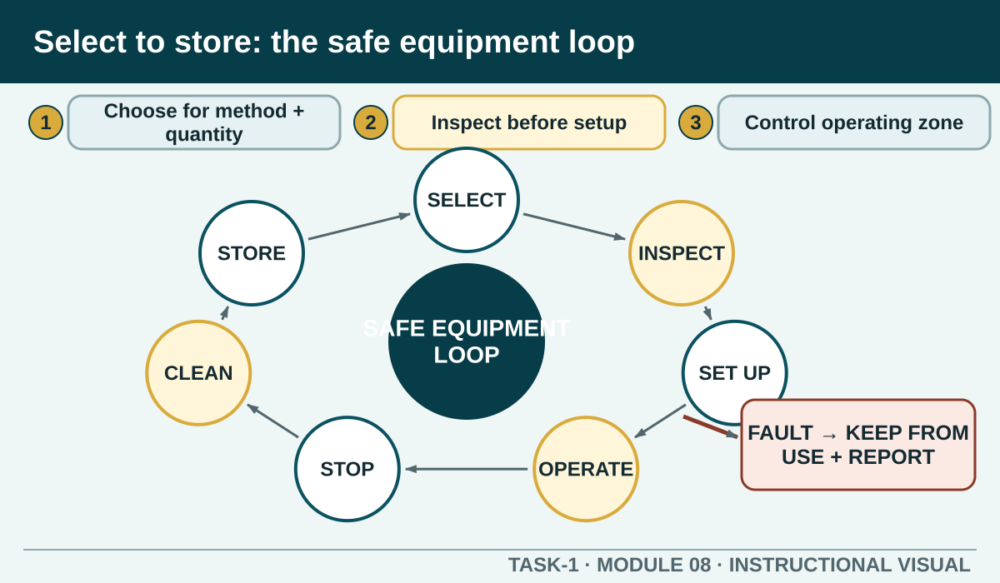

Prior learning
Recall the previous lesson and bring forward one question or completed learning artefact.
Task 1 · Lesson 8 of 16
Select, inspect, set up, operate, clean and store kitchen tools and equipment within the authorised demonstration, manufacturer information and learner's training.
Prior learning
Recall the previous lesson and bring forward one question or completed learning artefact.
Success criteria
Learning boundary
This lesson supports preparation and formative practice. The current authorised package and trainer/assessor control formal products, observations, dates and submission.
Start with the authorised recipe or task. Identify the action required, the amount of food, the precision needed and any heat, cutting, electrical or manual-handling hazard. Select equipment that is designed for the job and suitable for the quantity rather than choosing the largest or fastest item available.
Using unsuitable equipment can damage the product, overload the appliance or place hands and food in an unsafe position. Confirm unfamiliar names, attachments or abbreviations before collecting equipment.
Check that the item is clean, complete and in suitable condition. Look for cracks, loose handles, damaged blades, missing guards, unstable feet, frayed leads, damaged plugs, leaks or controls that do not operate as demonstrated. For electrical equipment, keep the item disconnected while assembling it if the authorised method requires this.
A pre-use check is not a repair inspection. If something is damaged, incomplete or uncertain, keep it from use and report it. Do not tape, bend, sharpen, bypass or reassemble a safety component unless you are specifically trained and directed to do so.
Place equipment on the required stable, clear surface with safe access to controls and enough space for ingredients, hands and finished product. Keep leads, handles and hot or moving parts away from walkways and water. Fit bowls, blades, guards or attachments using the authorised sequence.
Check that the equipment is correctly assembled before connecting or operating it. Tell nearby workers when the task creates heat, noise, movement or another shared exposure. A safe setup protects both the operator and people passing through the kitchen.
Use the demonstrated controls, capacity and feeding or handling method. Keep hands, utensils, clothing and hair away from moving or hot parts. Use pushers, guards, lids and other safety features as directed, and never defeat a safety interlock to save time.
Stay with operating equipment when the procedure requires supervision. If the sound, smell, movement or result changes unexpectedly, stop using it through the authorised method and report the condition. Do not reach into equipment or investigate a fault while energy remains connected.
Follow the demonstrated shutdown and isolation sequence before removing food, changing attachments, clearing a blockage or cleaning. Allow hot components to reach a safe handling condition as directed and protect electrical parts from water.
Dismantle only the parts included in the authorised procedure. Clean and sanitise food-contact parts as directed, inspect the result, dry or reassemble correctly and leave the equipment in the required safe state.
Return tools and attachments to their designated locations so blades, cords and heavy items do not create storage hazards. Do not hide a fault by returning equipment to the shelf. Use the authorised out-of-service and reporting process so another worker cannot unknowingly select it.
Record only checks and cleaning actually completed. If an item could not be cleaned, assembled or stored correctly, protect it from use and communicate the real status to the responsible person.
Phone view: swipe across the diagram, or use Open larger below.

Formative practice
Each option explains the workplace consequence. These responses save on this device.
Written application
Use observable facts, explain the consequence and keep local assessment or procedure details with the authorised source.
Self-checkApply and keep evidence
Distinguish a source of harm from its possible consequence and the action used to eliminate or minimise exposure.
Use the check result, activity record and written response as formative learning evidence only. Formal evidence remains controlled by the current package and trainer/assessor.
Next: Knife safety.
Authorised source note: Source basis: authorised Cycle 1 kitchen tools, equipment and safety learning. The exact equipment, guards, assembly, operating settings, cleaning and maintenance procedures remain controlled by current manufacturer information and Teacher to confirm.